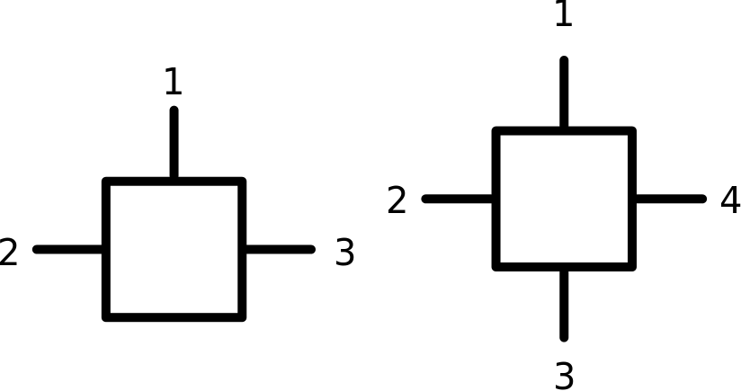

Matrix Product State Code
This is a basic code which implements the basic functionality needed to doc calculations with Matrix Product States. The code structure is described below.
Structure
A brief description of the folder structure is given below:
- bin
Contains the (user specific) makefiles and the binary files after compiling.
- config
Contains configuration files which are used as input to set the parameters of a run.
- core
Contains all header and cpp files which provide the core functionality such as MPS, Hamiltonians and more general MPOs, Tensor contractions and other things.
- libs
Folder to store the libraries needed on to link against for certain operating systems.
- matlab
A bunch of scripts to evaluate and check calculations. The subfolders named after the users contain user specific scripts. The subfolder core contains scripts which are generally useful to check MPO implementations and other things.
- models
A collection of various models which have been developed by the users and have proven to be reliable over the time.
- projects
Contains a collection of projects which are currently developed by the users or in collaboration among several users.
- programs
Contains a collection of various programs.
- tests
In this folder a collection of tests is stored which are there to test the basic functions and a few basic models of the MPS code. Compiling these tests is also a useful starting point for new users to see if everything is set up properly on their machine and is working.
- wrapper
A bunch of wrappers to communicate with blas and the various eigensolvers employed in the code.
Indexing convention
The indexing convention for MPO/MPS tensors (represented by mwArrays in the code) is as follows

Requirements
To be able to compile and run the code one needs a BLAS implementation, such as LAPACK, ARPACK and the PRIMME libraries for the eigensolver. The PRIMME libraries can be downloaded here.
Linux
After compiling the (static) PRIMME libraries libdprimme.a, libprimme.a and libzprimme.a, they have to be put in /usr/local/lib to be compliant with the Makefile structure
Last update of the mainpage:
- Author
- Stefan Kühn
- Date
- 07/04/16